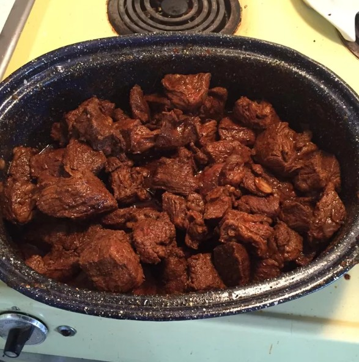

Home
Authentic Hungarian Goulash

Source :
https://www.allrecipes.com/recipe/25369/authentic-hungarian-goulash/
Description
This recipe was given to me by my sister, who got it from a lady visiting
from Hungary in 1961.
Ingredients
- 2 tablespoons butter
- 2 large onions, diced
- 2 pounds flank steak
- ⅛ teaspoon caraway seed
- ¼ teaspoon dried marjoram
- 1 clove garlic, minced
- 5 tablespoons paprika
- 2 cups water
- 4 large potatoes, peeled and cubed
- salt and pepper to taste
Steps
-
Melt butter in a large soup pot over medium high heat. Saute onions
until soft, then add beef and brown. Stir in caraway seed, marjoram,
garlic and paprika. Pour water over all, lower heat to low and simmer
for 2 1/2 hours.
-
Add potatoes and cook until tender, another 45 minutes to 1 hour. Season
with salt and pepper to taste and serve.
-
Warm flour tortillas in the microwave for 30 seconds. Spoon chorizo-egg
mixture into the middle of each tortilla and top with shredded Cheddar
cheese. Roll up like a burrito.